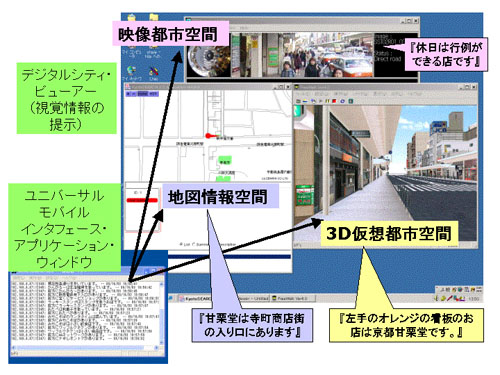

ユニバーサルモバイルインタフェースは既存のデジタルシティ資産を統合し，総合的な都市情報を提供するための新しいアプローチを提案するものである．当インタフェースは次の機能により相互接続された都市空間上の視覚情報の音声解説を実現する．
- 簡潔で統一されたユーザインタフェースの提供：複数の仮想都市空間を単一のオペレーションで操作可能
- ユーザの位置と移動の同期：各都市空間独自の座標系を統合する統一座標系を提供することにより，多様な仮想都市空間内の同期的な移動が可能
- 視覚情報の音声解説：仮想都市空間内の視覚オブジェクトにタグ情報を付加することにより，建物や道路などの都市構造物の音声解説が可能
- 音声解説の優先順位付け機能：各都市空間に特有の情報（地理情報，建造物の外観，混雑状況等）のうち必要なものを優先的に選択することが可能（モバイルユースに対応）
ユニバーサルモバイルインタフェースによる情報統合の一例として，本プロジェクトで基盤技術として開発された地図情報検索システム，仮想都市空間システム，映像都市空間システムの相互接続を図１のように実現した．

図１．ユニバーサルモバイルインタフェースと接続先の仮想空間及び音声解説の内容例
文献：
Tomoko Koda, Satoshi Nakazawa and Toru Ishida. Talking Digital Cities: Connecting Heteroge-ne-ous Digital Cities via the Universal Mobile Interface. DIGITAL CITIES III Informa-tion Technologies for Social Capital: a Cross-cultural Perspective. LNCS, 3081, Springer-Verlag, 2004.
連絡先：
京都大学 社会情報学専攻 石田亨 ishida at i.kyoto-u.ac.jp
科学技術振興機構 デジタルシティ研究センター 神田智子 koda at digitalcity.jst.go.jp